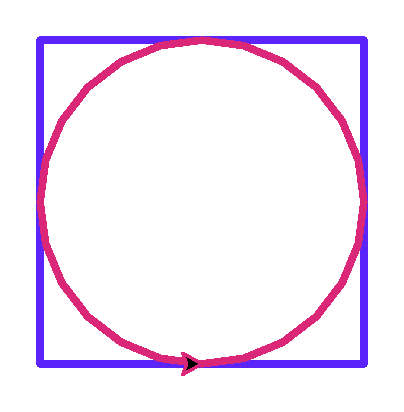
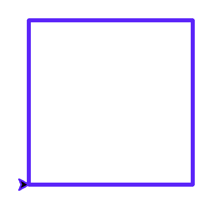
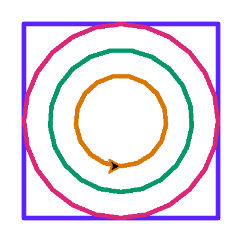

Глава 7 · Глубокое погружение в Turtle
Мини-проект — окружность внутри квадрата
Результат сначала, план потом, шаги по одному — учимся строить композицию из фигур осознанно, а не методом подбора.
Что мы построим
okruzhnost_v_kvadrate.py
import turtle
screen = turtle.Screen()
screen.setup(width=340, height=340)
artist = turtle.Turtle()
artist.pensize(3)
razmer = 150
artist.pencolor("#5B24F9")
artist.penup()
artist.goto(-razmer / 2, -razmer / 2)
artist.pendown()
for _ in range(4):
artist.forward(razmer)
artist.left(90)
artist.pencolor("#DB2777")
artist.penup()
artist.goto(0, -razmer / 2)
artist.setheading(0)
artist.pendown()
artist.circle(razmer / 2)
screen.exitonclick()Результат выполнения

Разложим на части
Прежде чем писать код, разберём рисунок на простые фигуры: квадрат со стороной
razmer, и окружность радиусом razmer / 2,
вписанная точно по центру.
Координатный план
Чтобы окружность идеально вписалась в квадрат, её нужно начать рисовать из точки на полпути вдоль нижней стороны квадрата — не из угла и не из центра:
| Что рисуем | Откуда начинаем | Курс в начале |
|---|---|---|
| Квадрат | нижний левый угол: (-razmer/2, -razmer/2) | 0° (вправо) |
| Окружность | середина нижней стороны: (0, -razmer/2) | 0° (вправо) |
Шаг 1: только квадрат
kvadrat_plan.py
import turtle
screen = turtle.Screen()
screen.setup(width=340, height=340)
artist = turtle.Turtle()
artist.pensize(3)
artist.pencolor("#5B24F9")
razmer = 150
artist.penup()
artist.goto(-razmer / 2, -razmer / 2)
artist.pendown()
for _ in range(4):
artist.forward(razmer)
artist.left(90)
screen.exitonclick()Результат выполнения

kvadrat_plan_kod.py
razmer = 150
artist.penup()
artist.goto(-razmer / 2, -razmer / 2)
artist.pendown()
for _ in range(4):
artist.forward(razmer)
artist.left(90)Шаг 2: добавляем вписанную окружность
okruzhnost_v_kvadrate_kod.py
artist.pencolor("#DB2777")
artist.penup()
artist.goto(0, -razmer / 2)
artist.setheading(0)
artist.pendown()
artist.circle(razmer / 2)Откуда взялась эта точка
Радиус вписанной окружности — ровно половина стороны квадрата. А центр окружности находится слева от черепашки (см. раздел «Геометрия окружности») — значит, чтобы центр совпал с центром квадрата, черепашка должна начать рисовать РОВНО из точки на нижней стороне, на расстоянии radius от центра.
Задание-вызов
koncentricheskie.py
import turtle
screen = turtle.Screen()
screen.setup(width=340, height=340)
artist = turtle.Turtle()
artist.pensize(3)
razmer = 150
artist.pencolor("#5B24F9")
artist.penup()
artist.goto(-razmer / 2, -razmer / 2)
artist.pendown()
for _ in range(4):
artist.forward(razmer)
artist.left(90)
colors = ["#DB2777", "#059669", "#D97706"]
for i, color in enumerate(colors):
radius = razmer / 2 - i * 20
artist.pencolor(color)
artist.penup()
artist.goto(0, -radius)
artist.setheading(0)
artist.pendown()
artist.circle(radius)
screen.exitonclick()Результат выполнения

★★ Самостоятельная задача
Свой набор колец
Измените код так, чтобы получить свой набор концентрических окружностей — другие радиусы, другие цвета.
★★ Самостоятельная задача
Окружность в шестиугольнике
Замените квадрат на шестиугольник из главы 6 и впишите в него окружность подходящего радиуса.
★★★ Задача повышенной сложности
Толстый контур
Увеличьте pensize() квадрата и окружности — как меняется восприятие фигуры?
Практика: вписанная окружность
Модуль turtle открывает нативное окно Python — выполните локально в VS Code, PyCharm или Jupyter
Практика выполняется локально